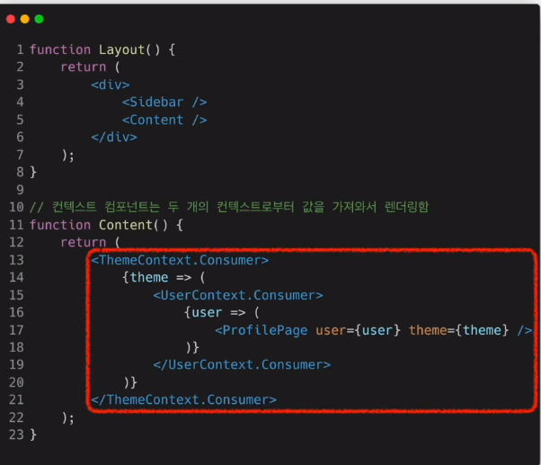

사용자 인터페이스를 만들기 위한 라이브러리
라이브러리 - 자주 사용되는 기능들을 모아놓은 것
UI - 입출력 제어해주는 것 button..
Ngularjs vue.js React
프레임워크 제어 권한 -> 프레임워크
라이브러리 제어 권한 -> 개발자
사용자와의 상호작용을 위한 인터페이스를 만들면서 관리하려고 만든
자바스크립트 SPA(single page application)
장점
빠른 업데이트와 렌더링
virtual DOM -> 가상의 돔
DOM -> 웹페이지 정보를 가진 큰 그릇
즉 가상 돔은 실제 돔과 웹페이지 사이에서 그 중간 매게체 역할이라고 봄
최소한의 부분만 update 하기 때문에 빠름(일반은 )
component - based -> 블록을 조립하듯한 구조
componet로 아루어진 웹사이트라는 소리
반복적으로 사용되는 component
재사용성
-> 다시 사용이 가능한 성질
-> 새로운 것을 계속 불러와서 사용
-> 호환성 문제가 없도록 개발할 수 있도록 만든다.
-> 그래서 API..
-> 리액트는 항상 쉽고 재사용성 잘 생각하기
-> react sponsor meta 든든
-> react 큰 cummity
-> reat React Native 모바일 앱인데 자바스크립트로 할 수 있다네요...?
-> 높은 상태관리 복잡도 state 아주 중요 이 역할을 하는..
-> 보통 큰 규모의 경우 redux Mobx recoil
명령어
npx
execute npm package binaries
-> 한번에 찾아서 처리해줌
npm application start 실행
JSX
자바스크립트 확장 문법
javascript + XML/ HTML
const element = < h1 >hello word < / h1 >;
역할
XML / HTML을 자바스크립트로 변환하는 과정을 거치게 됨 -> React.createElment()
JSX로 클래스를 만들고 ReactDom을 이용해 실제 화면에 랜더링
const element = {
html code
}
const element = React.createElement(
'h1',
{className : greating},
'Hello world'
)
두 코드는 완전히 일치하지만, 위는 JSX, 아래는 javascript로 작성
Jsx는 그 html 코드를 읽어서 javascript와 같은 형태로 변환해줌
const element = {
type: 'h1',
props:{
className : 'greeting',
children : 'Hello world'
}
[children] 도 들어갈 수 있는데 이는 요소가 가진 자식 element
}
1. 가독성 향상
2. injection Attacks 방어 -> 입력창에 문자 같은 일반적인 값이 아닌 소스코드가 들어가서
그 소스코드가 실행 되도록 하는 해킹방법
보통 ReactDom은 기본적으로 임베딩하기 전에 모두 문자열로 변환함.
사용법
일단 모든 javascript를 지원하고 HTML/XML 지원함
HTML에 {}안에 javascript 코들을 중간에 삽입할 수 있다.
Rendering Elements
Element
리액트 앱을 구성하는 가장 작은 블록들.
보통 Element는 DOM element를 의미하며, 브라우저에서 보통 html 요소로 되어 있음.
화면에서 보이는 것들
생김새 -> 자바스크립트 객체 형태 , 불변
{
type:'button',
props:
className:'btn'
children: {
type:'b',
props:{
children: 'hello,element!'
}
}
}
-> 이런 것을 만드는 것이 createElement
만든 component들을 구성해서 그걸 또 다른 component에 넣으면
그 component는 createElement를 했을 때 html code는 바로 element가 생성되고
React component는 다시 자바스크립트 객체 형태가 돼서 합쳐진다.
특징 및 레더링
element = 불변
요소 생성 후 children이나 attributes 바꿀 수 없다.
Component -> class 느낌
Element -> 객체들
새로운 element를 만들어 기존에 연결되어 있는 곳에 바꿔 끼움
그렇기 때문에 얼마나 자주 갱신되는가가 성능에 영향이 크다
렌더링
root id 안에 모든 react element들이 렌더링 되며 이를 root Dom node 단 하나
그런데 수많은 추가 react를 연결하면 여러개의 root Domnode
reactDom element는 React Dom에 존재하는 것이고 React Element는 브라우저에 존재함
setInterval(객체, 100) 100초마다 객체 렌더링 -> 새로운 element 렌더링
Component and Props
component based -> 레고 블록
input -> react component -> output
props -> react component -> react element
props -> property 속성
component의 속성들
붕어빵 틀 component
붕어빵 Element
들어간 속재료 props
props
값을 계속 변경하면 안됨 -> pure 해야함
모든 리액트는 컴포넌트는 props를 직접 바꿀 수 없고 같은 props에 대해서는 항상
같은 결과를 보여줄것
-> 함수에 param이 바뀌면 안됨
-> 같은 props는 항상 같은 결과
component 사용 방식
Function 과 class
Function이 편해서 많이 씀 -> Hook으로 발전
component는 항상 대문자로
소문자는 보통 Dom tag -> 내장 component
큰 컴포넌트를 모두 조각내면 component 추출
-> 재사용성 증가 -> 개발 속도 증가
감싸고 감싸고 감싸는 마치 div같음..
div에서 css를 분리해놓는것같은 마치 그런 느낌.. 대박..
상태
react component의 상태를 의미함
state() -> 항상 개발자가 정의해서 사용
렌더링이나 데이터 흐름에 사용되는 값만 state에 포함 시켜야함
state가 변경될 때마다 재렌더링 되기 때문에 성능저하
state == 자바스크립트 객체 -> 수정 안됨
state를 변경할 때는 this.setState 함수를 이용해야함
-> 렌더링과 관련되기 때문에 조심하세요
생명주기 -> 주로 class의 개념
mounting updating unmounting
생성자 실행 setstate forceupdate -> 여러번 업데이트 과정
-> 사망 componentwillUnmount
-> 자주 사용되는 개념이 아님
component가 계속 존재하는 것이 아니라, 시간의 흐름에 따라 생성되고 업데이트가 되다가 사라진다.
hook
class -> 생성자에서 state를 정의
setstate()를 통한 업데이트
Lifecycle method 제공
function -> state 사용 불가
Lifecycle에 따른 기능 구현 불가
hook은 중간에 끼어들어가서 함수 실행 시켜줌
state, lifecycle이나 최적화 관련 함수 같은...
usestate() state훅을 사용해서 state 사용
사용법
useState
const [변수명, set함수명] = useState(초기값);
호출하면 return 값으로 배열이 나옴
count 값을 usestate로 관리하겠다는 것임
useStaet(0) 초기값 0이라는 말
setCount를 이용해 count 값을 변경시키는데 변경되면 재렌더링이 일어남
변수 각각마다 모두 다른 set을 가지고 있음
useEffect
서버 데이터 가져오거나 수동으로 Dom값 변경
다른 컴포넌트에 영향을 미칠 수 있으며, 렌더링 중에는 작업이 완료될 수 없기 때문
-> 생명주기 함수와 동일한 기능
useEffect(effect함수, 의존성 배열);
의존성 배열은 -> effect가 의존하고 있는 배열인데 여기서 말하는 effect는 리액트 효과같은 것
하나라도 값이 변경하면 발생 -> 처음 렌더링 이후와 업데이트이후 재렌더링 이후에 실행
useEffect(이펙트 함수,[]) 빈배열을 넣으면, effectfunction이 mount unmout시 단 한번만 실행
의존성 배열을 생략해도 상관 없는데 그럼 컴포넌트가 업데이트될 때마다 호출된다.
예를 들어 useEffect로 브라우저 api를 사용해 title을 업데이트 한다고 하면
const [count,setCount] = useState(0);
Effect(()=>{
document.title="${count}";
})
// 이 코드의 경우는 처음 생성될 때 즉 didmount일 때 한번 생성되고
이후 계속 렌더링 돼서 update 될때마다 호출됨
즉 useState가 작동될 때 모두 다시 렌더링 되기 때문에 update
useEffect의 return함수는 unmount와 동일한 역할 소멸될 때
하나의 훅에 여러개 사용 가능
useMemo
Memorized value를 리턴하는 hook이다
Memoization이 무엇일까?
최적화를 위한 개념 -> 연산량이 많은 함수 결과를 저장해 두었다가 값을 다시 호출할때 다시 모두 연산까지 호출하지 않고
값을 저장해두었다가 불러오는 것
const memoizedValue = useMemo(
() => {
return computeExpensiveValue(의존성 변수1 , 의존성 변수2);
},
[의존성 변수1, 의존성변수2] // 의존성 배열
);
-> 이함수는 반드시 렌더링이 일어나는 동안 사용됨.
sideEffect가 실행될 때 서버에서 값을 받아오거나, 수동 Dom을 변경 작업등은 렌더링이 일어나는 동안 일어나면 안되기 때문에
memo 함수에 넣으면 안되고 useEffect 훅을 사용해야함
이것 또한 의존성 배열을 넣지 않으면 매 렌더링마다 함수가 실행됨
빈배열 -> 처음 생성mount시에만 호출된다. mount 이후에는 변경x
useCallback
useMemo와 거의 동일한데 다른점은 함수를 반환
const memoizedValue = useMemo(
() => {
doSomething(의존성 변수1 , 의존성 변수2);
},
[의존성 변수1, 의존성변수2] // 의존성 배열
);
useMemo와 거의 완전히 동일한 역할
useCallback(함수, 의존성 배열)
useMemo(()=>함수, 의존성 배열)
useRef
useRef는 Reference를 사용하기 위한 훅
특정 컴포넌트에 접근할 수 있는 객체
reObject.current에서 current는 현재 참조하고 있는 객체
const refContainer = useRef(초기값); mount 해제전까지 계속 유지
input에 ref성질과 비슷한데 다른점은 refhook은 자바스크립트 객체이기때문에
여러 값이 저장 가능하다.
useRef는 내부 데이터가 변경되었을 때 별도로 알리지 않음
current속성을 변경한다고 하더라도 재렌더링이 일어나지 않음
다른 노드에 연결될 때 마다 collback ref를 이용하여 호출할 수 있음
callback으로 ref를 구현하는데 그러는 이유는 ref는 별도의 current변경 알림이 없지만
callback은 자식 component가 변경될 때마다 알려줌
hook의 조건
반드시 최상위 레벨에서만 호출해야 한다.
반복문 조건문 중첩함수에서 훅 호출하면 안됨
-> 컴포넌트가 렌더링 될 때마다 매번 같은 순서로 호출되어야 한다.
리액트 함수 컴포넌트에서만 hook을 호출해야한다.
eslint-plugin-react-hook -> 강제 hook 규칙을 따르도록하는 플러그 인 ->자동으로 경고해줌
create함수가 참조하는 모든 값을 의존성 배열에 넣어주어야한다.
Custom hook
사용하는 이유는 재사용되는 여러 component에서 사용되는 반복되는 로직을
custom hook으로 만들어 재사용
두 소스코드에서 hook 반복적으로 사용되고 있다면 이름이 use로 시작하고 내부에서 다른 hook을
호출하는 하나의 자바스크립트 함수를 만들어 준다.
어떤 값을 리턴할지 등의 내용을 직접 개발자가 정함
--> 완전히 독립적
Event
어떠한 특징을 나타냄 -> 이벤트를 핸들링 한다.
함수 그대로 전달 -> React
String으로 전달 -> DOM
class에서?
EventHandler -> 사건 처리 = EventListener
javascript 함수들이 기본적으로 bind되지 않기 때문에 callback에서
this를 사용하기 위해서는 바이딩을 해줘야함.
bind를 하지 않으면 this.handleClick은 global scope에서 호출 되는데, 글로벌 스콥에서는 undefined이므로 사용 불가
Arrow function을 사용해도 되지만() onClick에 함수를 만들어 넣는 형태) 렌더링이 추가적으로 발생하여 성능 저하 문제
Function에서?
const [isToggle, setIsToggleOn] = useSate(true);
// 방법 1. 함수안에 함수로 정의
function handleClick(){
setIsToggleOn((isToggleOn)=> !isToggleOn);
}
//방법 2. arrow function을 사용하여 정의
const handleClick = () => {
setIsToggle((isToggle)=>!isToggleOn)
}
Event handler에 Argument는 어떻게 전달하는가?
-> 함수에 전달할 데이터
-> 이벤트 핸들러에 전달해야 할 데이터
onClick={(event)=> this.deletItem(id,event)}
or
onClick = {this.deletItmem.bind(this, id)}
conditional rendering
조건부 렌더링
-> 프로그래밍 랜더링
return html 내부에 작성할 수도 있고 따로 조건문을 빼도 됨
javascript의 truthy와 falsy
-> true지만 true로 여겨지지 않는 값
->false지만 false로 여겨지지 않는 값
truthy
true
{}
[]
number
"0", "false" -> string 형태
falsy
false
0,-0
0n
""
null
undefined
NaN
Element variable
외부작성
true&&condition
condition ? true:false
특정 컴포넌트를 보고 싶지 않으면 null을 리턴하면 됨
map
map함수-> 배열의 값들을 매핑시켜줌 return 배열
Listkey
-> 어떤 값의 CRUD를 확인하기 위해 사용
속한 집한 내에서만 고유하면 됨
예를 들어 학교내에서는 학번이 중복되면 안됨
하지만 다른 학교 사람이랑은 중복되어도 상관 없음
사용법
li 태그를 사용한다면 그 내부에 key값을 줘서 사용
key ={number.toString()}
key={map변수.id} // 그 id 값을 사용하는 것
key ={map변수.index} // 현재 아이템에 index 고유한 아이디 없을때 만하세요
map함수 꼭 key값 넣으세요
Form
HTML - element 내부의 각각의 state가 존재
intput textarea select 모두 자체적으로 state 관리
React - State를 통해 관리
controlled Component -> 사용자 값에 접근하고 제어할 수 있도록
const [value setValue] = useState("");
const handleChange = (event) =>{
setvalue(event.target.value);
const handleSumit = (event) => {
alert('입력한 이름: ' +value);
event.preventDefault();
}
input에서 input값이 변경되었을 때 호출되는 onChange
handle 함수에서 새롭게 변경된 값을 저장
event는 event 객체를 나타냄
event.target은 현재 발생한 이벤트의 target을 의미
event.target.value는 해당 target에 input value 속성값을 의미합니다
즉 target은 input element가 되며
event.target.value는 input element의 값이 됩니다.
-> 입력 양식의 초기 값을 마음데로 이용 가능
textarea
Html에서는 text가 children으로 들어가지만,
react에서는 value attribute를 이용해 관리
Select
Select tag는 drop down 목록을 보여주기 위한 HTML Tag
opption 제공
기존에는
* 위는 개발자 도구 참고
이런 식으로 되어 있지만 React에는
select에 value와 onChange를 넣어줌
만약 여러 옵션을 하고 싶다구? 그렇다면
select multiple ={true} value ={['B','C']} 이렇게 해주면 됩니다
만약에 input tag를 자유롭게 조정하는 식의 무언가를 만들어야 한다면
ReactDom.render(< input value = "hi" / >), rootNode)
setTimeout(fuction(){ReactDom.render(< input value ={null} />,rootNode)}, 1000)이런식으로 해주면
1초 뒤에 null로 변하면서 자유롭게 입력 가능
요즘에는 모두 상호작용이 많으니 잘 기억해두시길..
Shared component
Shared state는 데이터를 여러개의 하위 컴포넌트에서 공통적으로 사용하는 경우
하위 컴포넌트가 부모의 공통된 component를 사용하는 것
하위 컴포넌트를 어떻게 상위 컴포넌트를 끌어 올릴 수 있을까
값을 상위 컴포넌트에서 두고 쓴다는 그런 개념
composition
합성이라는 뜻에 가까움
여러개의 compoenent를 합쳐서 만듦
1.containment
-> 담다 포함하다
-> 하위 컴포넌트를 포함하는 형식
{props.children}을 이용해서 해당 component의 하위 컴포넌트가 모두 들어옴
React에 내장되어 있음
specialize
-> 범용된 것을 좀 더 구체적으로 표현
Dialog -> welcomeDialog or closeDialog
약간 버튼같은거
정리해보면 일단 큰 component를 만들고나서
props로 전달하는 component들의 이름을 가져와서 전달을하게 되는데
근데 props children은 조금 더 추가적인 것들을 만들고자 한다면
그 component에 다른 tag들을 막 넣을 수 있음
Inheritance
-> 부모를 상속받아서 새로운 component를 만들 수 있음.
-> 굳이 싶다고 함
-> 복잡한 컴포넌트를 쪼개서 여러개의 컴포넌트로 만들고,
만든 컴포넌트들을 조합해서 새로운 컴포넌트들을 만들자
context
-> 데이터가 컴포넌트의 props 단방향 전송
-> 자주 사용되는 data까지 그러면 복잡 그잡채..
그래서 곧바로 component tree로 곧바로 전송하는 것
이제까지 실습한 방식이 단방향
context를 이용하면 데이터를 한곳에서 관리해서 바로 compoent 접근 가능
캐싱데이터,지역 날씨,로그인 여부, 로그인 정보, UI 테마, 현재 언어등...
그런데 너무 많이 사용하면, 재사용성이 떨어지기 때문에 많이 많이 반복되는 것만 사용해야한다
context이전에 대안으로는 상위 변수로 빼는 것이다
예를 들어,
const user = props.user;
const userLink =(
가장 하위 단계 component 빼서 쓴 component 부분
);
그럼 아래 userLink에 변수로 계속 전달하면 됨
그런데 너무 상위 컴포넌트에만도 주면 안됨..
그럼 변수 여러개로 크게 나누세요~
사용법
React.createContext(기본값) 사용
상위레벨에 Provider가 없으면 기본값을 이용해야함
povider에 value가 있고 이 value로 하위한테 다 전달함.
하위 컴포넌트들은 consuming component라고 함 그리고 값이 바뀌면 재 렌더링, 중첩사용 가능
주의 사항
- reference 상황을 고려하기 때문에 Provider가 재 렌더링될 때마다 모든 하위 consumer가 모두 재렌더링 됨
그니까 value에서 값을 바꿔주면 안되고 state를 이용해서 값을 바꾸고 그 값을 넣어준다.
consumer표시를 하면 < Mycontext.Consumer >와 같이 하면 Context를 구독했다고 생각하면 됨
그럼 컨텍스트의 값에 따라서 컴포넌트들을 렌더링 함
function as a child
// children이라는 prop을 직접 선언
< Profile children ={name => 태그 {name} /태그} />
// profile 컴포넌트로 감싸서 children을 만드는 방식
< profile >{name => 태그 {name} /태그} < /profile >
그럼 context를 중첩해서 사용하려면? 중첩해서 사용

아니면 hook으로 사용하기 useContext()
-> 무거운 작업인 경우 최적화 필요
-> 그리고 반드시 객체를 넣어주어야함 MyContext.Consumer를 넣어주면 안됨
CSS
React에서 CSS 방법은 거의 유사하나 한가지 방법이 더 있음
바로 styled component이다..
tagged template literal
literal 이것이 무엇이냐?
바로 자바스크립트에 등장하는 문법이다
literal -> 소스코드에 고정된값 변수 선언할때 오른쪽 값
template literal
untagged와 tagged가 있음
const Wrapper = styled.div`
padding:1em;
background: grey;
`
이런 식으로 쓰임 그럼 return 할때 wrapper을 태그로 쓰면 적용된 component가 만들어짐
propsfheh tkdyd rksmdgka color: ${props =>props.dark? :}
이런 코드를 넣어주면 되는데 그럼 태그 안에 props 값만 넣어주면됨
< button dark >Dark< / button > 이런식으로
만약 만든 코드를 확장하고 싶니..? 그렇다면 styled.button 대신
style(Button)`블라 블라` 이런식으로 이미 만든 Button styled component를 만들어 주면 됨
-> 그런데 styled component를 할 때에는 너무 세부적인 것을 모두 하는 것보다 큰 개념을 styled component로 해주고
SCSS style로 관리하면 조금 더 가독성이 좋다.
React -router -dom
리액트 라우터 돔에서 BrowserRouter 이제까지 웹을 탐색했던 히스토리를 담아 뒤로 돌아갈 때 이전 히스토리로
돌아갈 수 있도록 해준다. 경로를 탐색할 수 있게 해주는 component
Routes는 여러 Route를 자식들로 가지고, Route는 해당 경로에 path와 element를 가짐 element는 경로가 일치할 경우 이동할 component
마지막 build
build는 코드와 애플리케이션이 사용하는 이미지 css파일 등의 파일을 모두 모아서 패키징하는 과정
-> offstation 코드를 알아볼 수 없게 하는, inification 축소
-> serve static 파일들을 서빙해주는 역할을 해주는 프로그램 global 모드로 하게 되면 어떤 경로든지 이용가능
-> npm run build
-> serve -s build
그래서 배포는 빌드를 통해 생성된 정적인 파일들을 배포하려는 서버에 올리는 과정이다.